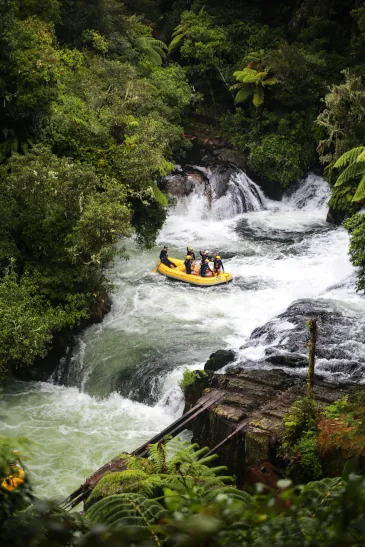
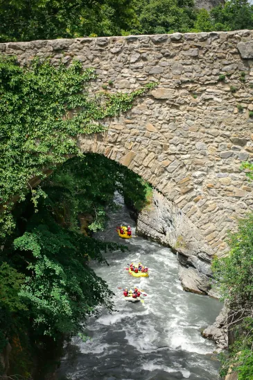
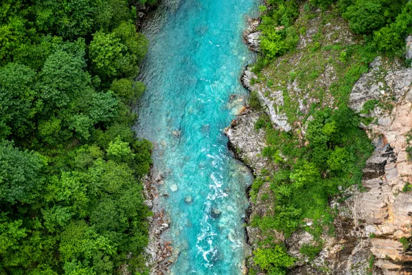

Available Trips
Forest Forks

This is an adventure that both beginners and veterans of white water rafting can enjoy. You have a choice of either the route of serenity or the heart- pumping river of insanity. Camps are also available for both routes. Combine that with a beautiful forest and many creatures to spot (don't try to pet the moose), and you got yourself an unforgettable experience.
Amazing Architecture

If you love both history and rafting, this trip is for you. The river passes by many old buildings and settlements. Your guide can even share details about them if you are interested. And what could be better than enjoying an old- fashioned meal at the end of the day?
Relaxing River

Do you want to get away from it all? Choose this trip. It is far away from civilization and in the midst of beauty and wonder. The river here is fairly peaceful, allowing you to focus more on the sights.
| Name | Location | Price | Guide |
|---|---|---|---|
| Amazing Architecture | Sedona, Arizona | $700.00 | John Eastmond |
| Relaxing River | Whitehorse, Yukon, Canada | $1,100.00 | Ajelan Probert |
| Forest Forks | Cedar City, Utah | $400.00 |